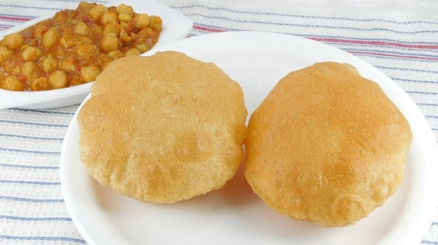

Poori or Puri is a traditional Indian fried bread that is delicious to enjoy with almost any main dish. It’s a simple unleavened bread made from just whole wheat flour, salt, and water.
Ingredients
- 2 cup wheat flour
- 1 tbsp rava / semolina / suji (fine)
- 1 tsp sugar
- 1 tsp salt
- 2 tsp oil
- water (for kneading)
- oil (for frying)
Steps
- Firstly, in a large bowl take 2 cup wheat flour, 1 tbsp rava, ½ tsp sugar, ½ tsp salt and 2 tsp oil.
- Crumble and mix well making sure the flour is moist.
- Now add water and knead the dough.
- Knead the dough tight adding water as required.
- Now pinch a large ball size dough and roll to form a log.
- Cut into pieces and roll them to small balls.
- Place the balls into a small bowl and 1 tsp oil. grease the ball to prevent from drying.
- Now take a ball and roll using a rolling pin. Roll to slightly thick thickness.
- Drop the rolled dough into the hot oil.
- Press until the puri puffs up and splash oil to puff up fully.
- Flip over and fry until it turns golden brown.
- Finally, drain off the poori and is ready to enjoy with aloo bhaji.